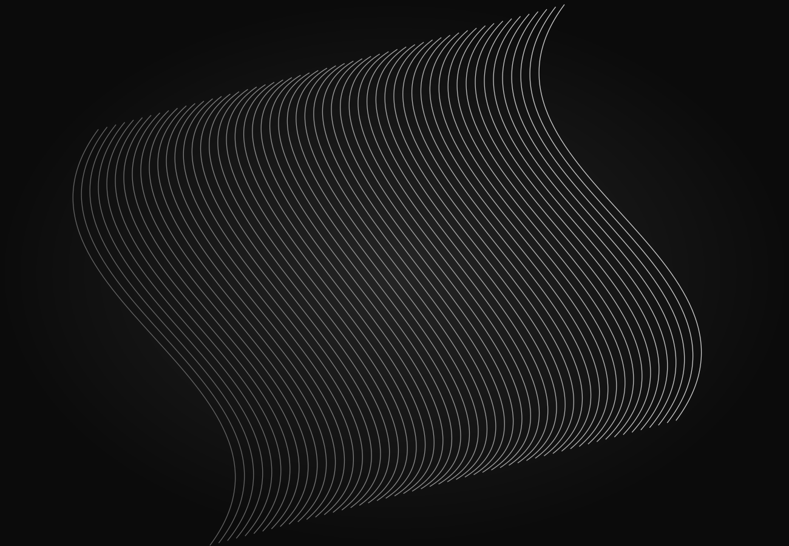

Cadrer le besoin
Échanger avec vos équipes, comprendre les usages et définir les contraintes, les interfaces et le périmètre du projet.

Playback Solutions / Laboratoire créatif & ingénierie technique
A creative lab. We design and build custom hardware and software instruments with artists.
Explorer nos expertises01 / Playback Solutions
Recherche, création
et ingénierie technique.
Playback Solutions conçoit et développe des solutions sur mesure pour les artistes, les équipes créatives et les professionnels du spectacle vivant et de l’audiovisuel.
Du premier prototype à l’exploitation, nous réunissons développement logiciel et matériel, intégration et fiabilisation des systèmes.
À propos02 / Nos expertises
Trois expertises
complémentaires
Recherche, conception et développement de hardware, de software et d’interfaces sur mesure.

Conception, intégration et exploitation de systèmes pour les performances et les installations.

Architecture, redondance, supervision et maintenance des systèmes techniques.
A process you can rely on
Échanger avec vos équipes, comprendre les usages et définir les contraintes, les interfaces et le périmètre du projet.
Explorer, prototyper, construire et vérifier le fonctionnement de la solution dans son environnement technique.
Mettre en service, documenter et accompagner l’exploitation et la maintenance selon les besoins du projet.